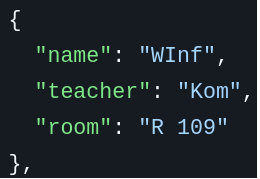

This is a small gadget which is able to show me a quick overview of my next schoolday with eventual changes in the plan.
Please note that this project is a bit more "private", which means that the Github repo is not yet public, although it exists. If you somehow have the desire to know more, you can contact me for example on Discord: "jonathan.f."

I am using a normal Raspberry Pi Zero W (The second version should work, although not tested) along a 2.13" red and black epaper display from WaveShare.
There is an installer provided, which just requires a fresh install of preferably Raspberry Pi OS Lite (32 Bit) and just requires "git" to be installed.
The installer will make the program run on boot every 30 minutes.
If there is a change detected in the substitution plan, it will be updated.
Furthermore, the script figures out, which day you probably want to see.
If the time is >12:00, it will show the next day. This is because I am in school at this time and it will just have a seamless "transition" between days.
In the GitHub repo, there is a file called "data.json". This is the config file.
The values "username" and "password" should be pretty obvious, they require the login data for your schools DSBMobile account.
The grade field requires you to enter, well, the grade you're in. For example "10".
The class for me would be "A".
The "schedule" might be a bit complex and there are probably better ways to do this,
anyways.
Every day is its own list [], each lesson then gets a dictionary that should look something like this:

You then just repeat this for how many lessons you got each day.
That would be the entire config and be sufficient to run the program.
First, the custom libraries "display_controller" and "get_plan" as well as "time" are imported.
import display_controller
import get_plan
import timeIt will then start a while True loop and keep track of the execution time to ensure exactly 30 minutes of wait time.
It runs
periods = get_plan.get_periods()and then it runs this code (If periods have changed):
display_controller.draw_plan(periods, get_plan.get_weekday_name(get_plan.get_display_day()))You can see, that it calls "display_controller.draw_plan()" with the parameters schedule=periods, and day=a string it gets from a function, which represents the weekday.
Thats basically all for main.py. The script will now wait half an hour and rerun.
The most important function is basically "get_updated_plans()". This function will fetch the substitution plan using this wonderful wrapper: DSBApi
With the data received through DSB, it will iterate every row and column and update the nominal plan saved in "data.json" with updated data. It looks something like this:
new_plan[day][period]["name"] = column["subject"]The file also has all the functionality to parse the current weekday.
This piece of the code is responsible to draw the parsed data onto the eink. It does this using the SPI connection and a script by WaveShare, which makes the communications a whole lot easier.
It basically calculates the dimensions for the weekday-title and then just iterates over the schedule.
The function draws a box with the dimensions 103px * 22px for each lesson and puts the data in them in this format:
Lesson/Teacher/Room
If the "changed" key is set to true, which happens in get_plan.py, the box including the text is changed to red.
This is makes it easy to tell in a quick glance, if there is any change.